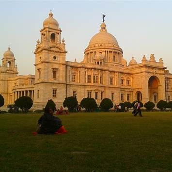
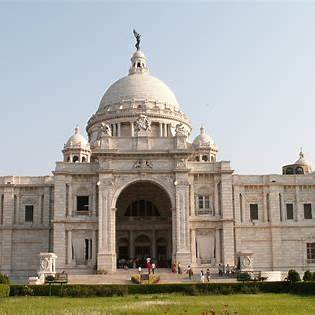
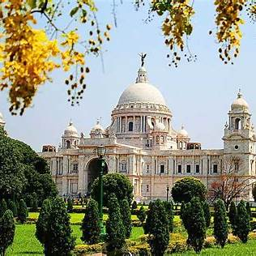
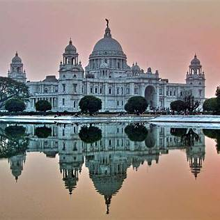

About Victoria Memorial




The Victoria Memorial in Kolkata is a monumental white marble structure dedicated to Queen Victoria, the Empress of India from 1876 to 1901. Constructed between 1906 and 1921, it stands as a testament to the city's colonial heritage and architectural grandeur.
Architectural Design: Designed by British architect William Emerson, the memorial showcases Indo-Saracenic architecture, blending British and Mughal elements with Venetian, Egyptian, and Deccani influences. The building measures 338 feet by 228 feet and rises to a height of 184 feet. A prominent feature is the central dome, topped by a 16-foot figure of the Angel of Victory. The structure is constructed from white Makrana marble, sourced from Rajasthan.
Gardens and Surroundings: Encompassing 64 acres, the memorial is surrounded by lush gardens designed by Lord Redesdale and David Prain. The grounds feature statues of notable figures such as Lord Curzon, Lord Bentinck, and Lord Ripon. The Edward VII Memorial Arch, located to the south, includes a bronze equestrian statue of Edward VII by Bertram Mackennal.
Museum and Galleries: The Victoria Memorial houses 25 galleries, including the Royal Gallery, National Leaders' Gallery, Portrait Gallery, Central Hall, Sculpture Gallery, Arms and Armour Gallery, and the Kolkata Gallery. The museum's collection features over 50,000 artifacts, including paintings, sculptures, manuscripts, and rare books. Notably, it holds the largest collection of works by artists Thomas Daniell and William Daniell.
Visiting Information: The memorial is open to visitors throughout the week, with specific hours for the museum and gardens. Entry fees apply for both the museum and the gardens. Photography is permitted in the gardens but restricted inside the museum. The memorial is illuminated at night, offering a picturesque view.
The Victoria Memorial stands as a symbol of Kolkata's rich history and cultural heritage, attracting millions of visitors annually.
Details
Location : 1, Queens Way, Maidan, Kolkata, West Bengal 700071
Phone : +91-33-2223 5142
Email : victomem@gmail.com